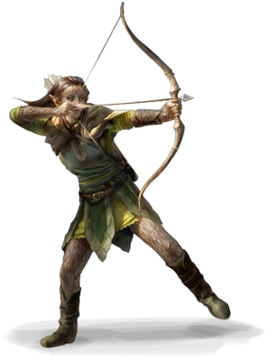
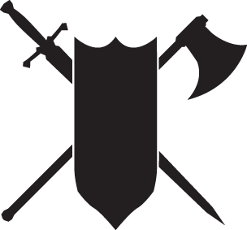
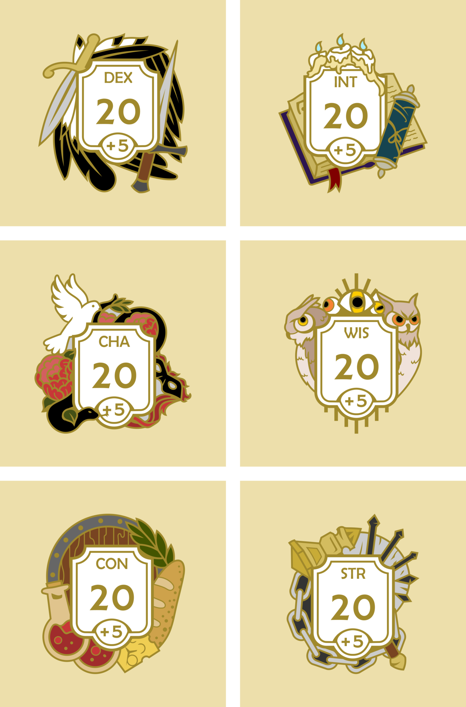
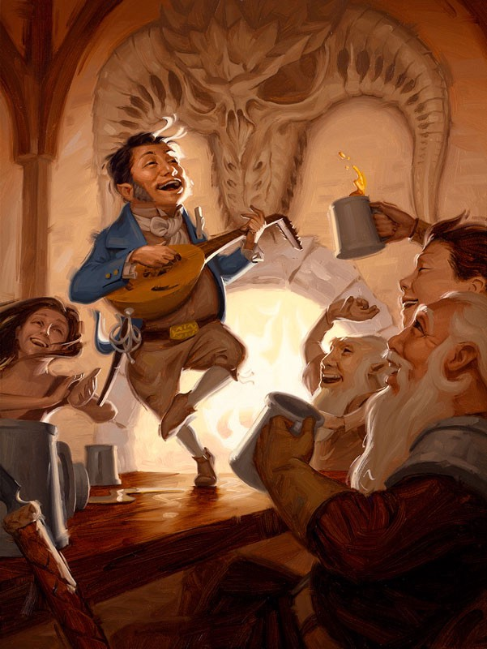
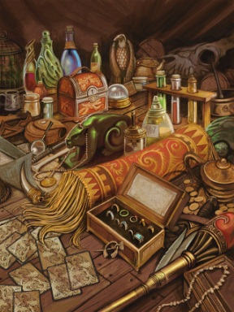
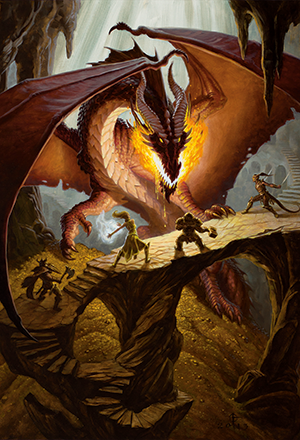

1. Escoge una raza
Cada personaje pertenece a una raza, es uno más de los varias especies humanoides en D&D. Las razas jugables más comunes son enanos, elfos, medianos y humanos. La raza de tu personaje te da rasgos y bonos, como sentidos especiales o más habilidades.
Puede explorar las razas del juego en este sitió.

2. Escoger una clase
Cada aventurero tiene una clase de personaje. Las clases describen en forma general la ocupación de un personaje, talentos especiales, y las tácticas que es más probable que el personaje utilice al explorar una mazmorra, peleando contra monstruos o solventando una negociación tensa. Tu personaje recibe varios beneficios de la clase que elijas.
Puede explorar las clases del juego en este sitió.

3. Determinar puntos de atributos
Mucho de lo que tu personaje haga depende de seis atributos:
Fuerza: mide la fuerza física.
Destreza: mide la agilidad.
Constitución: mide el aguante y resistencia.
Inteligencia: mide el razonamiento y memoria.
Sabiduría: mide la percepción y perspicacia.
Carisma: que mide la fuerza de personalidad.
Puede aprender más sobre los atributos de personaje en este sitió.

4. Describe tu personaje
Una vez que conoces los aspectos básicos del juego sobre tu personaje, es tiempo de trabajar en su historia y personalidad. Además tu personaje también necesita un nombre. Pasa un rato pensando sobre como es su comportamiento y apariencia. También necesitaras escoger un Trasfondo para tu personaje.
Puede explorar más sobre los trasfondos en este sitió.

5. Escoge tu equipamiento
Tu clase y trasfondo determinan el equipo con que inicia tu personaje. Esto incluye la armadura de tu personaje y las armas que posee. Además, equipo de aventura adicional es obtenible mediante el equipamiento inicial que brindan cada clase o trasfondo.
Puede aprender más sobre el equipamiento inicial en este sitió.

6. Juega con tus amigos
Los personajes en D&D no trabajan solos. Cada personaje juega un rol en el equipo, un grupo de aventureros trabajando juntos por un propósito en común. Habla con tus otros compañeros y el DM para decidir si tu personaje es conocido de otro, como se conocieron, y en qué tipo de aventuras es probable que el equipo se embarque.
¡Puedes encontrar con quien jugar en distintas comunidades de internet!